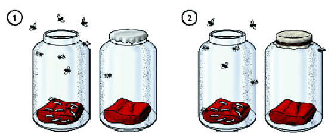
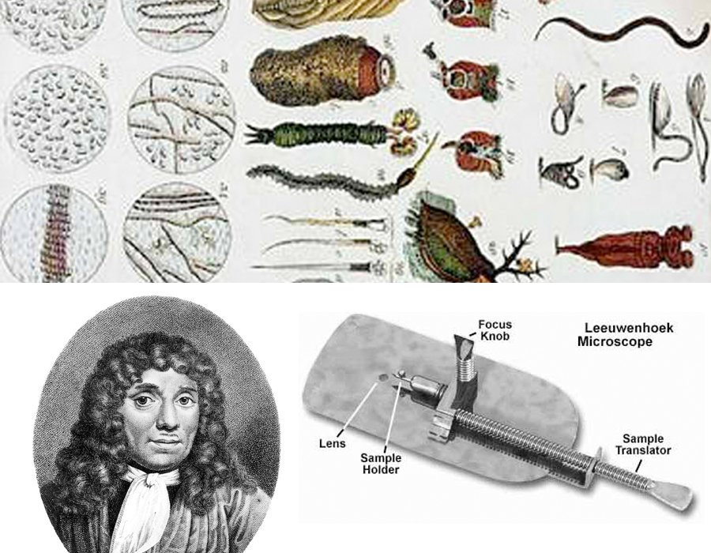
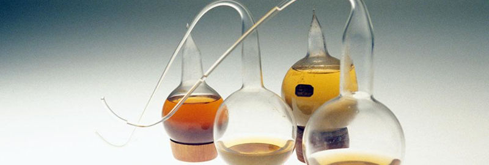

La Francia del Segundo Imperio
Corría el año 1859. Mientras Charles Darwin publicaba en Inglaterra El Origen de las Especies, en Francia se desataba otro debate de proporciones filosóficas monumentales. El escenario era la Academia de Ciencias de París, una institución de inmenso prestigio que no solo dictaba qué era considerado "ciencia formal" en Europa, sino que poseía enormes vínculos políticos y religiosos con el Segundo Imperio francés de Napoleón III.
La cuestión central no era un mero cálculo matemático o la órbita de un planeta, sino el propio origen de la vida. Desde tiempos de Aristóteles se creía que organismos simples como moscas, gusanos o microorganismos podían surgir espontáneamente del lodo o de la materia en putrefacción. Aunque varios científicos del siglo XVII y XVIII (como Francesco Redi en 1668 y Lazzaro Spallanzani en 1768) habían intentado refutarlo, la teoría demostró ser sumamente resistente.

A pesar de que Redi había demostrado que las larvas de la carne no surgían de la nada, sino de huevos puestos por moscas, la doctrina vitalista persistió. Su principal salvavidas fue un descubrimiento que cambió por completo el paradigma de lo visible: los animáculos.

Hacia finales del siglo XVII, el naturalista amateur y comerciante holandés Antonie van Leeuwenhoek (1674), utilizando microscopios simples de su propia invención, logró observar algo para lo que la ciencia de la época no estaba preparada: un universo rebosante de pequeños seres moviéndose espasmódicamente en simples gotas de agua, sarro dental y lluvia estancada. Los llamó "animáculos". Paradójicamente, este majestuoso descubrimiento no zanjó el debate de la biogénesis; todo lo contrario. Aunque ya no parecía lógico que ratones y moscas "brotaran" mágicamente del trigo sucio, al observar la infinita multiplicación celular se reavivó fuertemente el dilema a nivel microscópico: los infusorios y bacterias visibles al microscopio parecían sin duda alguna brotar de la nada en cualquier materia orgánica.
Los contendientes en la Academia
El misterio de lo microscópico
¿Por qué un trozo de carne terminaba invariablemente cubierto de larvas? ¿Por qué los jugos de uva terminaban fermentando y el caldo expuesto al aire se pudría, poblándose de diminutos "bichos" invisibles al ojo desnudo?
El enigma cobró especial urgencia médica y económica: la putrefacción de los alimentos, las plagas de los cultivos de seda y las enfermedades humanas resultaban incontrolables al no conocerse su causa operativa. Si la vida podía surgir espontáneamente en cualquier caldo de cultivo, combatirla o predecirla se volvía lógicamente imposible.
A finales del siglo XVIII, Theodor Schwann había calentado infusiones orgánicas y suministró oxígeno purificado o aire esterilizado por calor, evitando el desarrollo bacteriano. Sin embargo, quienes defendían la generación espontánea sentenciaron que "al calentar demasiado el aire, Schwann destruyó el principio vital ('fuerza vegetativa') necesario para la vida espontánea". Esta hipótesis ad hoc reavivó la anomalía y exigió metodologías aún más rigurosas que no alterasen químicamente el aire.
Heterogénesis vs. Biogénesis
El Frasco con Cuello de Cisne y la Infusión de Heno
La Academia de Ciencias francesa ofreció el Premio Alhumbert (1860) al experimentador que pudiera zanjar la disputa "arrojando nueva luz sobre la cuestión de las llamadas generaciones espontáneas".
1. Los Experimentos de Pouchet (1859)
Pouchet fue sumamente riguroso para los estándares de la época. Para invalidar los reclamos de Pasteur que decían que el aire estorbaba, él introdujo matraces llenos de agua hervida (esterilizada) sumergidos boca abajo en una tina de mercurio líquido para aislarlos del aire circundante. A través del mercurio burbujeaba dentro tubos de oxígeno puro y añadía infusión de heno calcinado. A los pocos días, la infusión se llenaba de microorganismos.
2. Los Experimentos de Pasteur (1860-1864)

Buscando refutar la generación espontánea sin "alterar la composición mágica del aire", Pasteur sopló, al fuego, el vidrio de unos matraces de caldo hasta formar cuellos largos curvados en forma de "S" (cuellos de cisne). Dejó la punta abierta permitiendo la entrada libre de aire fresco de la habitación. Tras hervir el caldo nutritivo en el interior, demostró que se conservaba absolutamente estéril por tiempo indefinido. ¿La clave? El aire lograba oxigenar el caldo, pero cualquier polvo cargado de gérmenes en suspensión quedaba mecánicamente atrapado en la curvatura de entrada por simple gravedad y condensación, no pudiendo doblar y viajar hacia arriba hasta el líquido. Si decidía quebrar el vidrio e introducir gérmenes de forma directa, en escasas horas el caldo se pudría.
Curiosamente, ambos tenían datos sólidos, e incluso la Academia reconoció primero a Pouchet pero luego coronó ganador a Pasteur. Lo que nadie supo hasta años más adelante fue que el 'caldo de heno' orgánico que utilizó Pouchet, albergaba esporas de bacterias del Bacilo (descubierto luego por Ferdinand Cohn) que son termorresistentes y soportan horas de ebullición intensa. Por otro lado, Pasteur usaba nutrientes a base de jugos de levaduras o uvas sin elementos termorresistentes. En retrospectiva epistémica (externalismo), Pouchet no fue un "mal científico", sino poseedor de las variables equivocadas. El jurado de la academia de París también incluyó comités favorables hacia Pasteur gracias a motivos clericales, otorgándole una ventaja sistemática que dictaminó al "vencedor científico" mediante factores ajenos al laboratorio.
El fin de un paradigma vitalista
Tras coronarse vencedor con el Premio Alhumbert, Pasteur asestó un golpe mortal e inequívoco (sociológica y experimentalmente) a la teoría de la generación espontánea biológica. Su victoria institucional sentó los axiomas para establecer la microbiología moderna clínica.
¿Qué demostró este debate para la Filosofía de la Ciencia?
Primero: la consolidación del método refutacionista experimental. Ningún "experimento aislado"
prueba irrefutablemente un paradigma sin que existan disputas sobre hipótesis auxiliares
compartidas.
Segundo: la intrínseca influencia externalista del poder, en conjunto con factores netamente
internalistas racionales, en la aceptación general de las teorías paradigmáticas. Hoy llamamos
pasteurización al proceso diario en nuestra leche e insumos, como testamento de una de las
controversias intelectuales más importantes de la Modernidad.